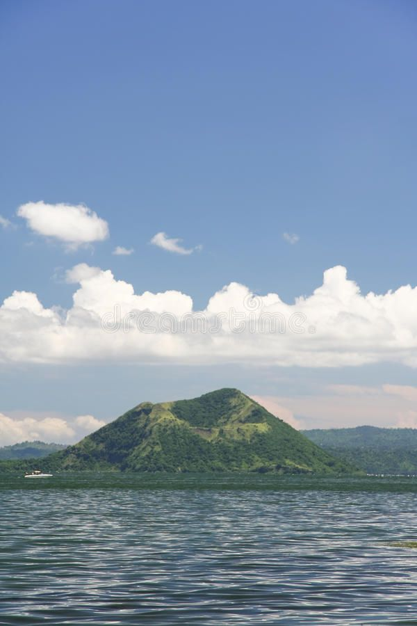

Region 4A, also known as CALABARZON, is a region located in the southern part of Luzon, the largest island in the Philippines. CALABARZON is composed of five provinces: Cavite, Laguna, Batangas, Rizal, and Quezon. It is one of the most populous and economically vibrant regions in the country, known for its diverse industries, historical sites, natural beauty, and proximity to Metro Manila.
Cavite is a province known for its historical significance. It is home to numerous historical sites, including the Aguinaldo Shrine in Kawit, where the Philippine Declaration of Independence was proclaimed. Cavite is also known for its industrial zones, residential developments, and the popular tourist destination of Tagaytay, famous for its cool climate and breathtaking views of Taal Volcano.
Laguna is a province known for its natural and cultural attractions. It is famous for its hot springs and resorts in Los Baños and Calamba. The province is also home to the picturesque Laguna de Bay, the largest freshwater lake in the Philippines. Laguna is known for its handicrafts, particularly the traditional woodcarving and pottery in the town of Paete.
Batangas is a province known for its beautiful beaches, diving spots, and ancestral houses. It offers a wide range of coastal attractions, including the popular beach destinations of Nasugbu, Laiya, and Calatagan. Batangas is also famous for its heritage sites, such as the Taal Basilica, one of the largest Catholic churches in Asia, and the heritage houses in Taal town.
Rizal is a province known for its proximity to Metro Manila and its natural landscapes. It offers outdoor activities such as hiking and mountain biking in the mountains of Sierra Madre and the stunning views from Rizal's peaks. The province is also home to historical sites like the ancestral house of national hero Jose Rizal in Calamba.
Quezon is the largest province in CALABARZON and is known for its rich agricultural lands, coconut plantations, and beautiful beaches. The province is home to the enchanting beaches of Pagbilao and Padre Burgos, as well as the popular tourist destination of Lucban, which hosts the colorful Pahiyas Festival.
CALABARZON is a region that offers a mix of natural beauty, historical sites, cultural heritage, and economic vitality. Its proximity to Metro Manila makes it a popular destination for weekend getaways and day trips. Whether it's exploring historical landmarks, relaxing on the beaches, indulging in local cuisine, or immersing in traditional arts and crafts, CALABARZON has something to offer for every type of traveler.